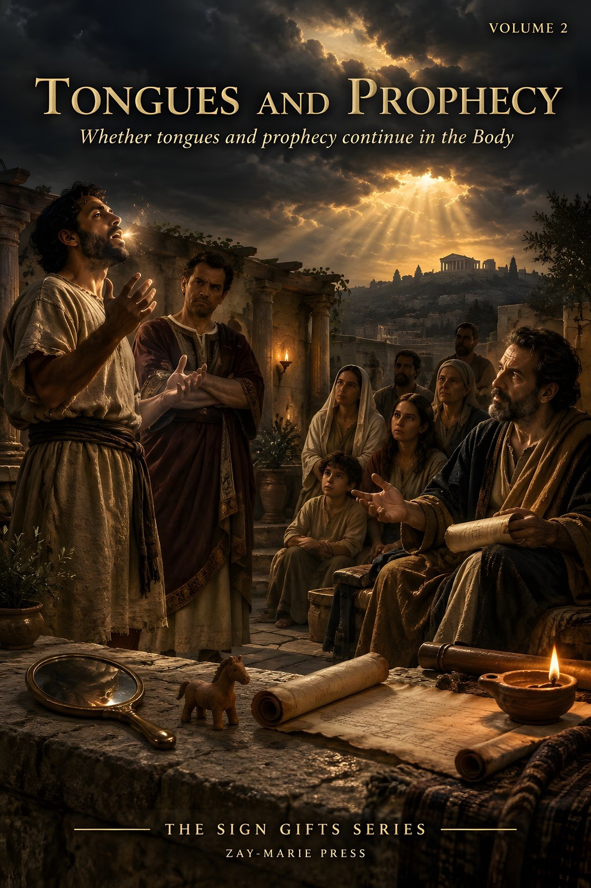
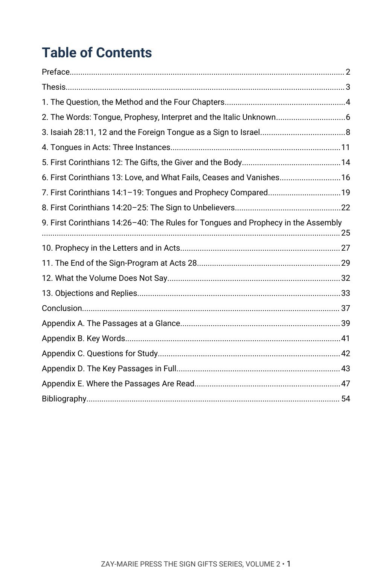
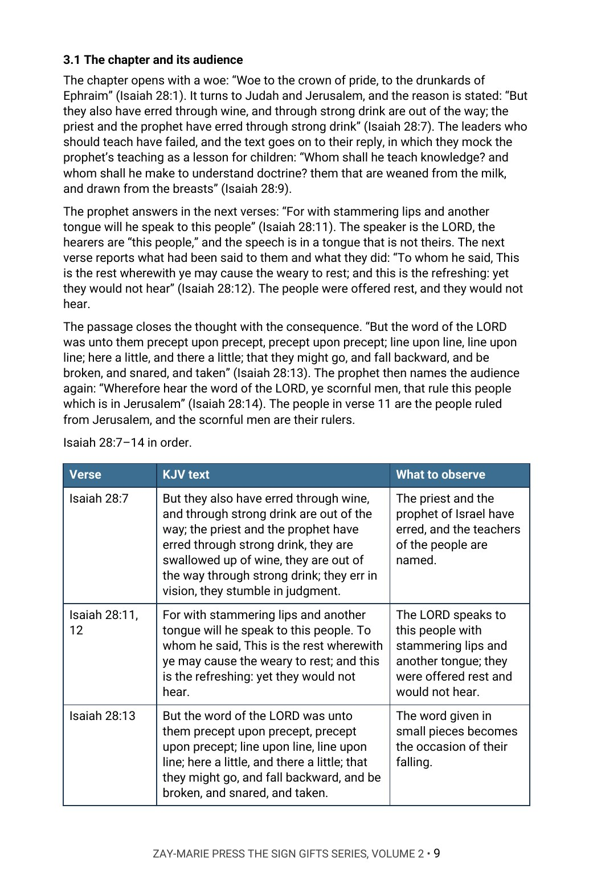
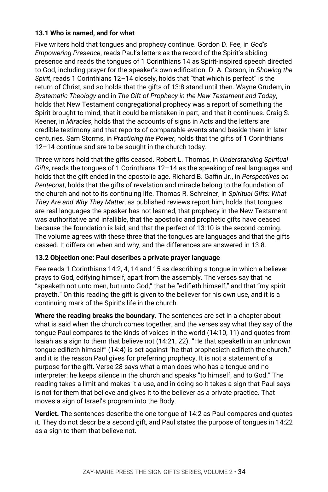

Tongues and Prophecy
Whether Tongues and Prophecy Continue in the Body
What does 1 Corinthians 14 say tongues are, who they were for, and when did they end?
Paul writes of tongues and prophecy in three chapters, and Luke records tongues at Jerusalem, at Caesarea and at Ephesus. The same word is used in each, and one sentence of Paul’s quotes Isaiah to say what a tongue is for. Are the tongues of the Corinthians the same as the tongues of Acts, and does the sign Paul describes belong to every believer?
It argues that the tongues are languages, given as a sign to unbelieving Israel on the authority of Isaiah 28:11, 12, that the Corinthian gifts belong to the overlap and end with the national suspension of Israel’s program at Acts 28, and that no present practice of tongues is the biblical gift. It states plainly that the end of prophecy is an inference. In Chapter 13 it sets its reading beside modern writers who hold that the gifts continue and others who hold that they ended, and rules on each.
New to the framework? The Digital Studies teach the distinctions this volume relies on. Start with the Digital Studies →
A Commentary That Argues a Position
This volume does not list the views held on tongues and prophecy and leave the choice to the reader. It says what the author believes the passages state: what a tongue is, whom it was given to, what Paul says it was for and when the gifts ended. It gives the evidence from the passages and rules on the strongest objections by name.
It is the second volume of The Sign Gifts Series, each volume of which is built around one narrower question about the signs of Scripture. Volume 1 asks what signs were for and where the record of them ends; this volume asks what tongues and prophecy are and whether they continue in the Body. It is a different kind of book from the Digital Studies, which report what a passage says. Scripture is quoted from the King James Version throughout, checked word for word, and the writers named in Chapter 13 are described from their published works and are not quoted.
Related Reading
Digital Studies
Study 81 — Praying in the Spirit Reports what the passages say of praying in the Spirit and speaking in tongues without taking a position; this volume argues what the tongues are and whether they continue.
Study 25 — The Signs That Followed Reports what Mark 16 says of signs and its textual question; this volume does not treat Mark 16.
Study 38 — Why Acts Is Not a Universal Experience Manual Reads Acts as inspired history that is not a command for every believer; this volume reads the three instances of tongues in Acts beside 1 Corinthians 14.
Bible Book Companion Series
Bible Book Companion — 1 Corinthians Interprets the book of 1 Corinthians through its key passages.
Bible Book Companion — Isaiah Interprets the book of Isaiah through its key passages.
Bible Book Companion — Acts Interprets the book of Acts through its key passages.
Commentary Series
The Sign Gifts Series, Volume 1 — The Sign Gifts Argues what signs were for, to whom they were given and that the record of signs ends in Acts 28; this volume argues the nature of tongues and prophecy and rests on that ending.
Pauline Doctrine Series, Volume 4 — The Assembly in Order Argues the order of the assembly in 1 Corinthians 11 to 14; this volume cites the rules of 14:26–40 for what they show about the gift.
Acts Commentary Series, Volume 2 — The Spirit in Acts: Pentecost to Ephesus Argues the Spirit scenes in Acts from Pentecost to Ephesus; this volume reads the three instances of tongues beside 1 Corinthians 14.
From the Word “Tongue” to the End of the Gift
The Words
Trace “tongue,” “prophesy” and “interpret,” and mark the KJV’s italic “unknown” and its lowercase “spirit” where they stand.
Isaiah 28
Read Isaiah 28:7–14 in its own chapter and mark the speaker, the hearers and the speech before Paul quotes it.
Tongues in Acts
Set Acts 2, Acts 10 and Acts 19 side by side, recording who speaks, who hears and what each passage leaves unsaid.
First Corinthians 12 to 14
Walk the three chapters in the order Paul wrote them, from the list of gifts to the rules for the assembly.
Prophecy
Follow prophecy through Acts and Paul’s letters and mark what each passage says a prophet does.
The End of the Gift
Read Acts 28 and 1 Corinthians 13:8–10, then weigh modern writers on both sides of the question and the ruling on each.
Read the Word in Its Context
Isaiah 28:11
“For with stammering lips and another tongue will he speak to this people.”
1 Corinthians 14:21
“In the law it is written, With men of other tongues and other lips will I speak unto this people; and yet for all that will they not hear me, saith the Lord.”
1 Corinthians 14:22
“Wherefore tongues are for a sign, not to them that believe, but to them that believe not: but prophesying serveth not for them that believe not, but for them which believe.”
1 Corinthians 14:10
“There are, it may be, so many kinds of voices in the world, and none of them is without signification.”
1 Corinthians 13:8
“Charity never faileth: but whether there be prophecies, they shall fail; whether there be tongues, they shall cease; whether there be knowledge, it shall vanish away.”
Acts 2:4
“And they were all filled with the Holy Ghost, and began to speak with other tongues, as the Spirit gave them utterance.”
Acts 10:46
“For they heard them speak with tongues, and magnify God. Then answered Peter,”
Acts 28:28
“Be it known therefore unto you, that the salvation of God is sent unto the Gentiles, and that they will hear it.”
What This Book Sets Out to Do
Paul says what tongues are for, and he says it by quoting Isaiah.
The volume reads the sentence where it stands, in 1 Corinthians 14:21, 22, and in the chapter of Isaiah it comes from, before it says what the gift is or whether it continues.
Preview the Volume Before You Purchase
Click any page to enlarge it for reading.


Table of Contents
See the full order of the argument, from the Preface to the Bibliography.



The Argument at Work
See the method: Isaiah 28:7–14 read in order, with the KJV text set beside what each passage says.


Objections and Replies
See modern writers named on both sides, each position stated, and the ruling on each objection.
A Full Commentary on Tongues and Prophecy
55-Page Digital PDF
Cover and a fully numbered interior.
Thirteen Chapters
From the question and the words to the end of the gift at Acts 28 and the objections and replies.
Objections and Replies
Modern writers named on both sides, each objection ruled on from the text.
Passage by Passage
Isaiah 28, Acts, and 1 Corinthians 12 to 14 read in order, with what each leaves unsaid.
Comparison Tables
The words, the three instances in Acts and the readings of 13:10 set side by side.
Conclusion
The position restated in full, with a closing table.
Five Appendices
The passages at a glance, key words, questions for study, the key passages in full and a verse-by-verse index of where the passages are read.
Bibliography
Every work cited, listed by author and title.
Tongues and Prophecy
55-page digital PDF · For personal use